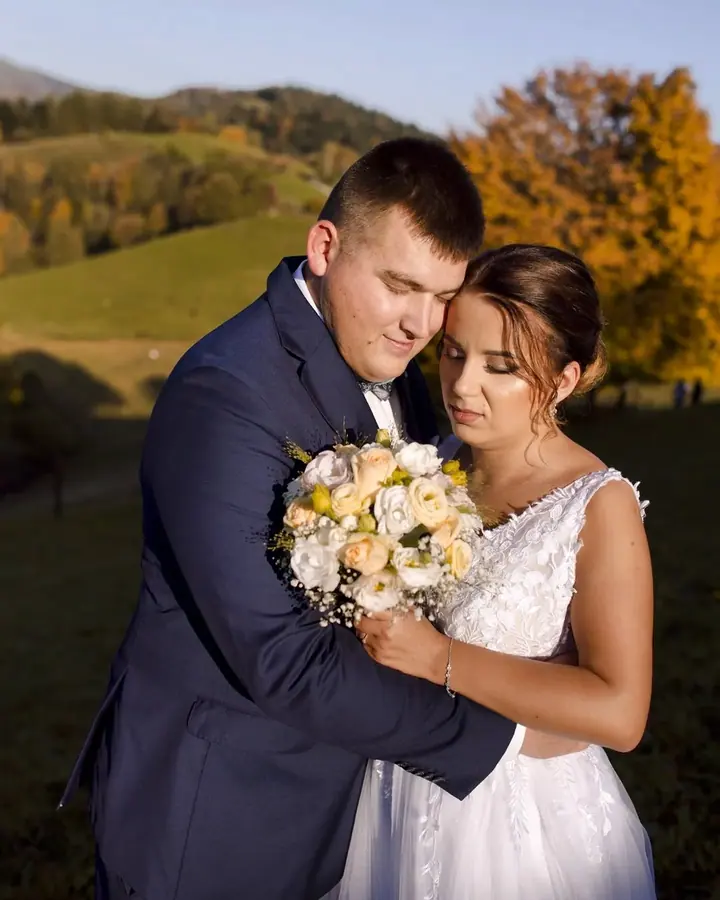
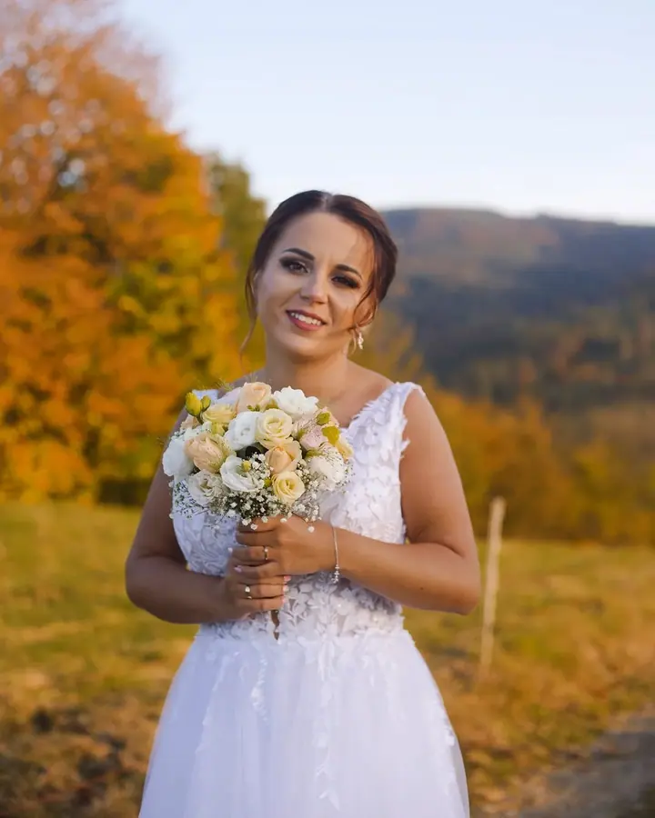
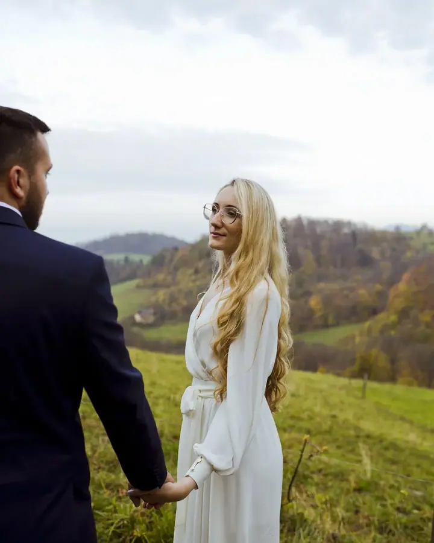
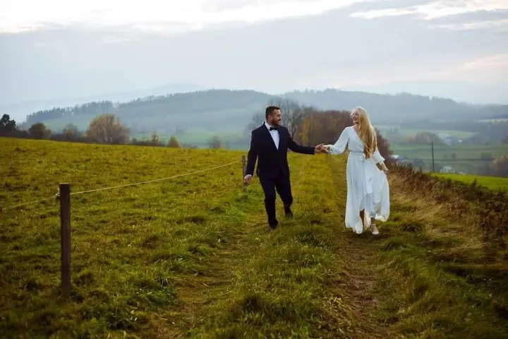

jedna
Svatby
Fotím obřady v kostele i na úřadě, rodinu a hosty i procházku ve dvou v okolních kopcích. Snažím se, aby na fotkách zůstaly opravdové emoce a blízkost.

Svatební a rodinná fotografka · Těšín, Český Těšín, Ustroň, Visla a Bílsko-Bělá

Jmenuji se Magda a fotím svatby i rodinné chvíle na Těšínsku, kousek od hranic s Českem. Nejradši mám obyčejné a upřímné momenty, kdy se na sebe dva lidé podívají a zapomenou, že je někdo fotí. Když dojde na focení venku, vyrazíme spolu do kopců a luk kolem Těšína, nebo klidně tam, kam si vyberete vy.
Více o mně
Co fotím
jedna
Fotím obřady v kostele i na úřadě, rodinu a hosty i procházku ve dvou v okolních kopcích. Snažím se, aby na fotkách zůstaly opravdové emoce a blízkost.
Klasické focení s polohováním, zavinovačkami a košíky, nebo přirozené focení v bílé bez spousty rekvizit. Obojí probíhá v klidu v mém ateliéru v Těšíně a tempo se řídí miminkem.
Jemné snímky v bílé, přirozený lifestyle nebo elegantnější kadry inspirované módní fotografií, v ateliéru i venku. Pro budoucí maminky mám připravený těhotenský šatník.
Rodinné focení v ateliéru nebo venku na Těšínsku a narozeninové a roční focení s balónky, v boho stylu nebo v bílé. Balónkovou girlandu si po focení můžete odvézt domů.
Každá svatba je vlastní příběh

Za objektivem
Narodila jsem se a vyrostla v Těšíně a mám tu i svůj fotoateliér. Fotím od roku 2017 a za tu dobu jsem si zamilovala hlavně fotky, které ukazují opravdové emoce a vztahy mezi lidmi.
Fotím svatby, ale i těhotné maminky, novorozence a celé rodiny. V ateliéru vznikají jemná focení miminek a maminek, ven pak vyrážíme za svatebními procházkami a rodinným focením. Mám svá oblíbená místa, ale ráda vyzkouším i to vaše.
Nejčastěji fotím v Těšíně, Skočově, Ustroni, Visle a Bílsku-Bělé, ale za hranice okresu ani přes hranici se nebojím. Pokud se vám moje fotky líbí, napište mi, ať bydlíte kdekoli. Ráda za vámi přijedu.
Magdalena
Pošlete mi datum, místo a pár slov o tom, jak si svůj den představujete. Ráda odpovím na všechny otázky ohledně průběhu a volných termínů.
Na focení venku společně najdeme to pravé místo. Mám svá oblíbená zákoutí na Těšínsku, ale ráda se nechám inspirovat i vašimi tipy.
Jsem s vámi od příprav přes obřad až po procházku ve dvou. Nechávám vám prostor, abyste mohli být sami sebou.
Fotky pečlivě vyberu a upravím tak, aby z nich byla památka, ke které se budete rádi vracet.
Portfolio
Otázky
Ano. Ateliér mám v Těšíně hned u hranic s Českem a za focením ráda přijedu tam, kde jste.
Ideálně mezi 5. a 20. dnem života, kdy miminka spí nejklidněji. Termín je dobré rezervovat už v těhotenství a přesné datum domluvíme po porodu.
Nejlépe mezi 28. a 34. týdnem, kdy je bříško hezky vidět a většina maminek se ještě cítí pohodlně. Když si zarezervujete těhotenské focení, máte 20% slevu na focení novorozence.
Určitě. Při focení novorozence fotíme i společné rodinné snímky a fotky se sourozenci, z kterých se časem stává ta nejcennější památka.
Napište pár vět o tom, co si představujete. wach.magdalena.93@gmail.com